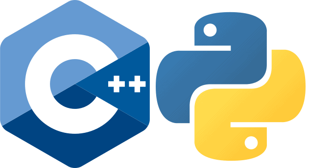

OBJECTIVE
Enthusiastic and motivated undergraduate Computer Science student seeking software engineering internship opportunity to develop and enhance my technical, communication, and problem-solving skills, while contributing to the success of a dynamic organization. Proficient in C++ and Python.
EDUCATION
University of Southern California, Los Angeles, CAAug 2022 - Dec 2024
Bachelor’s in computer science- Currently Taking probability Theory, Python, Discrete Mathematics, Embedded Systems
- Some of my projects include a Baccarat game, a Wordle game in C++
Riverside Community College, Norco Aug 2020 - May 2022
Transfer in Computer Science- Took High-level classes which are Data Structure, Calculus 3, C++ Programming
- Some of my projects include, a Baccarat game, Wordle game in C++
PROFESSIONAL EXPERIENCE
SEO Affiliate Manager Jun 2021 - Oct 2022
Paradise Media- Learnt SEO business fundamentals in order to compete for the internship opportunities
- Complete numerous industry-related skills and assignments requisite for institutional knowledge and technical abilities
- Received online coaching to achieve targeted interviews, professional and technical development goals
Telemetry Technician Oct 2020 - Mar 2022
Kindred Hospital, Riverside CA- Analysis of patients' heart rhythms with major emphasis on the lethal rhythms
- Assisted in code blue/rapid response situations, communicating with doctors and nurses regarding patient rhythms
- Communication with patients’ family members and relaying the messages to Nurses
Freelancer Nov 2017 - Aug 2021
UpworkAssistant Jr. Project Manager
- Coordinated/managed an SEO affiliate online team and helped improve their working relationship which led to increased productivity and profit by $5000 monthly.
- Ensured that datelines are reached by effective coordination
- Created constructive and successful work flowcharts implementing the SDLC which enabled team members oversee the completion of their tasks
Virtual Assistant – Customer Service
- Worked with small / medium business owners to help them enhance their online presence via social media and Facebook marketing
- Managed multiple social media accounts for Mentor hub, Igor Solo ads by posting content, answer followers' questions, which led to more sales, followers, and increased online presence of company
SKILLS
- C++ Programming
- Python 3.0
- Search Engine Optimization
- Bilingual (French, English)
- HTML
- CSS